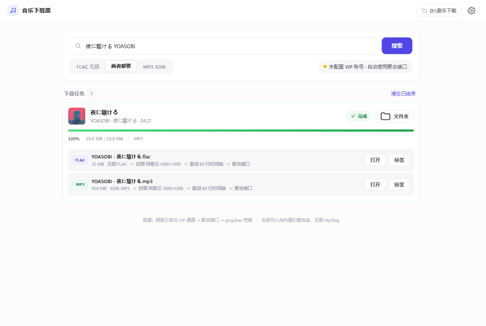
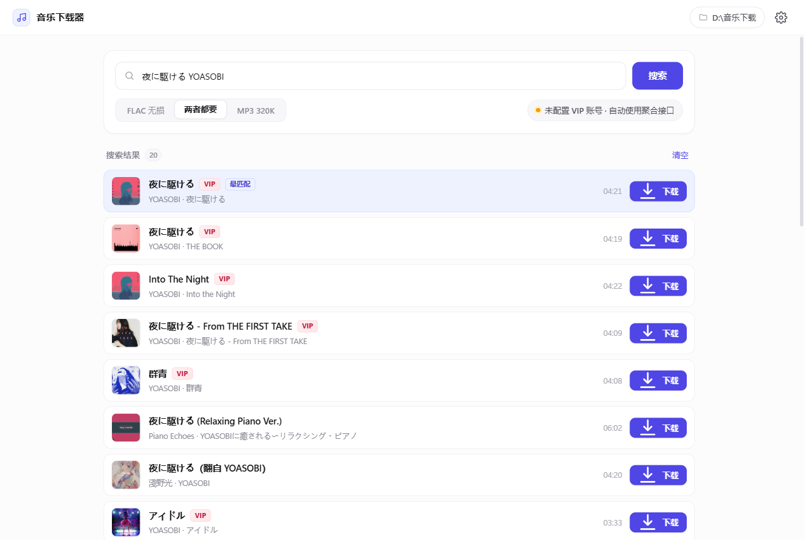
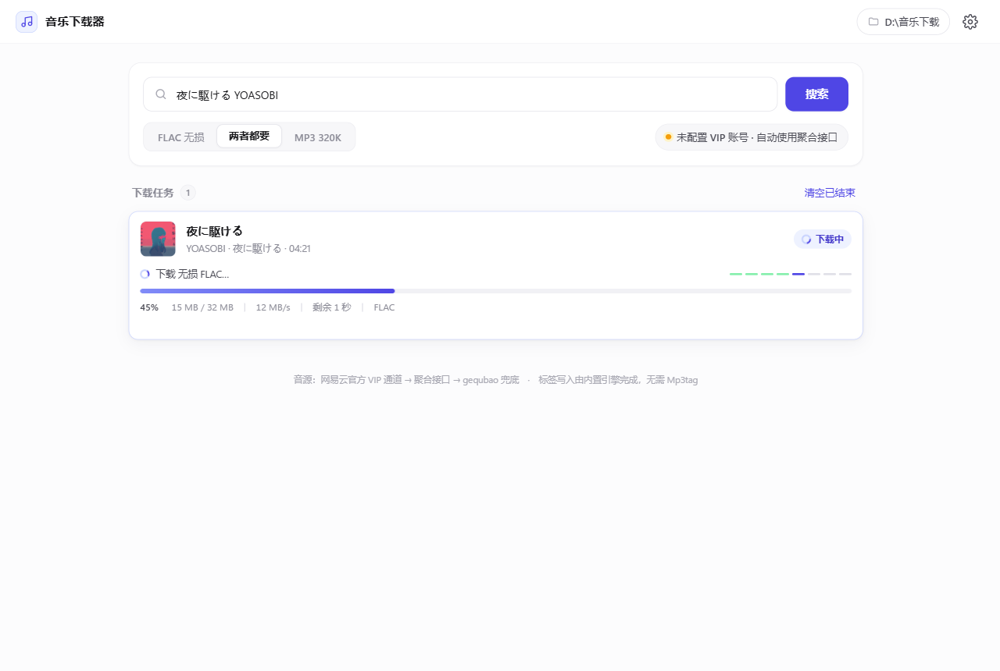
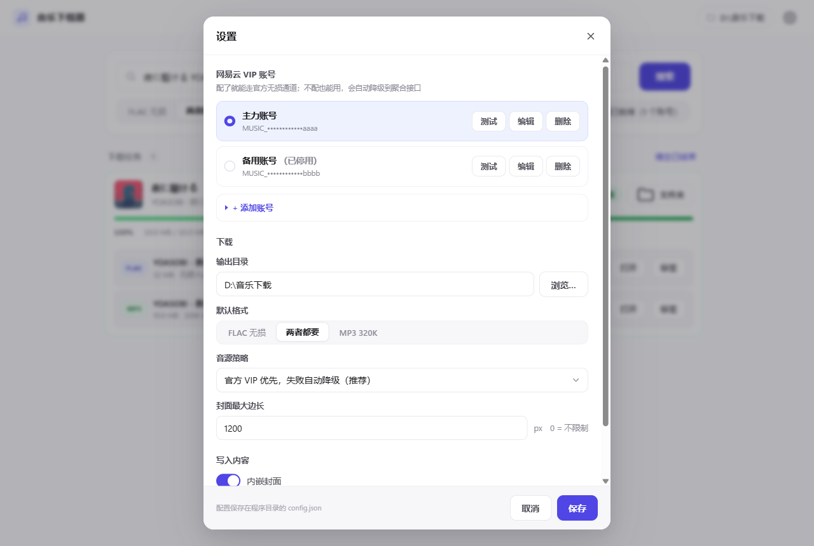
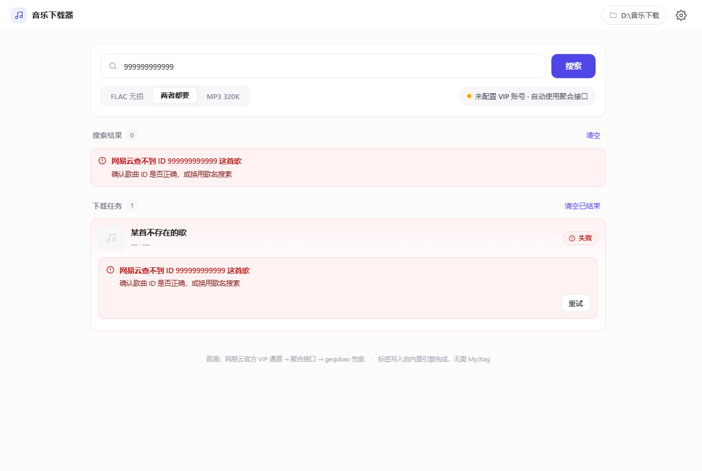

搜歌，下载，
封面和歌词自动写好
从网上下载的音乐，多半是「未知艺术家 + 乱码文件名 + 没有封面」。 这个工具把这一整套活儿全包了 —— 下载无损音频的同时，把封面、双语时间轴歌词、 专辑、歌手、年份、流派一次性写进文件里。
约 24 MB · 解压即用 · 首次运行 SmartScreen 会提示，点「仍要运行」即可

该有的都有
没有花哨的功能，就是把「下载音乐」这件事一次做对。
最高音质
优先取无损 FLAC（44.1kHz / 16bit，约 1090kbps），也可选 320K MP3。频谱验证过是真无损，不是升频的假货。
封面自动挑最清晰的
同时在网易云和 iTunes 里找同一张专辑，自动用分辨率最高的那张，最高可达 3000×3000。
歌词带完整时间轴
日文原词 + 中文翻译按时间戳对齐合并成双语 LRC。MP3 还会写入 SYLT 逐行同步歌词，foobar2000 会跟着高亮。
VIP 账号像 API Key 一样管理
Cookie 可保存多组、随时切换，每组都能一键测试是否有效、是什么会员等级、能不能真的取到无损直链。
进度看得见
实时百分比、下载速度、剩余时间，外加六个步骤的流程指示器，卡在哪一步一目了然。
报错说人话
每条错误都给「原因 + 该怎么办」两行，还能展开看技术详情。不用去猜为什么失败了。
三级音源自动降级
官方通道 → 聚合接口 → 兜底源，逐级自动重试，每一级的失败原因都记录下来一起告诉你。
还有命令行版
附带 music_dl.py，支持从列表文件批量下载，与界面版共用同一套引擎。
长什么样
白色底、细灰线、单一靛蓝点缀。没有一处多余的装饰。




三步用起来
-
1
下载并解压
到 Releases 下载压缩包，解压到任意普通目录，比如
D:\音乐下载器\。 -
2
双击运行
运行
音乐下载器.exe。第一次 Windows 会拦一下，点「更多信息 → 仍要运行」。 -
3
搜歌、点下载
歌名、歌手、网易云链接、歌曲 ID 都能直接粘。文件默认存到
D:\音乐下载\。
💡 想要官方无损通道，就配一个自己的 VIP 账号
不配也能用，程序会自动走第三方接口。但配上你自己已经付费购买的网易云黑胶 Cookie，就能走官方通道 —— 更稳定、更合规，也是你的正当权益。
拿 Cookie：登录 music.163.com → F12 → Application → Cookies → 复制 MUSIC_U 的值 →
程序里「设置 → 添加账号」。可以存多组。
常见问题
双击 exe 一闪而过，没有窗口？
程序所在的目录路径有问题。已知 D:\我的\程序\deepseek harness work\
及其子目录下会出现这种情况（实测 100% 复现），原因是该环境下 pythonnet 加载
Python.Runtime.dll 失败。把整个文件夹剪切到别处即可。
除此之外，纯 ASCII、中文、带空格、长短路径都测试过，全部正常。
提示「所有音源通道都没能取到直链」？
三级通道全挂了。常见原因是第三方聚合接口临时限流或停止服务，或者这首歌在各个 平台都需要付费购买。处理办法：点「重试」；到设置里点「测试」检查 Cookie 是否 还有效；如果聚合接口长期不可用，就配一个自己的 VIP 账号走官方通道。
只有 128K，拿不到无损？
界面上会显示实际拿到的音质。如果显示「酷我 128K」，说明前两级通道都没成功， 降级到了兜底源。配一个网易云黑胶 VIP 账号走官方通道即可拿到无损。
为什么不用 Mp3tag 写标签？
Mp3tag 官方文档写得很明确："Mp3tag is built as an interactive program, further
commands are currently not planned." 它只有 /fp 和 /fn
两个命令行参数，没有任何打标签的命令行接口，无法批处理。
所以本程序用 mutagen 直接读写标签 —— 做的事和 Mp3tag 内部完全一样，
生成的都是标准格式，随时可以丢进 Mp3tag 复核或再编辑。
会封号吗？
正常使用频率下没有发现问题。但请不要用它高频批量抓取 —— 那既可能触发风控， 也会给第三方服务造成负担。
能放到手机里听吗？
可以。下载完把 D:\音乐下载\ 里的文件拷到手机即可。长期听建议选
「MP3 320K」（体积小、兼容性好）；归档收藏选「FLAC 无损」。
使用须知
- 本工具仅供个人学习与技术研究使用，请勿用于商业用途或大规模分发。
- 请只下载你有权获取的内容。通过第三方接口获取需付费的会员内容属于灰色地带， 由此产生的一切后果由使用者自行承担。
- 推荐做法：配置你自己已经付费购买的 VIP 账号走官方通道。
- 本项目不包含、不托管任何音乐文件。
- 第三方接口与本项目无关，其可用性和行为随时可能变化。